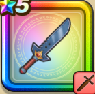

パプニカのナイフ
攻略班 6.5点 / かえん斬り大地斬海波斬アバンストラッシュ竜の紋章
くわしい特徴
【レベル別習得スキル】 Lv1【バトマス】すばやさ+5 Lv1かえん斬り（消費MP：3）敵1体に威力130%のメラ属性斬撃ダメージを与える Lv10大地斬（消費MP：22）アバン流刀殺法のひとつ。敵全体に170％のジバリア属性の斬撃ダメージを与える Lv15海波斬（消費MP：23）アバン流刀殺法のひとつ。敵全体に200％のヒャド属性の斬撃ダメージを与える Lv20アバンストラッシュ（消費MP：27）アバン流刀殺法のひとつ。敵1体に無属性400%の斬撃ダメージを与える Lv30竜の紋章（消費MP：40）使用時含む6ターンの間こうげき力と守備力を1段階上げ、アバンストラッシュにデイン属性を付与する Lv35マシン系へのダメージ+5% Lv40けもの系へのダメージ+5% Lv45攻撃時+2%の確率で転びを与える Lv50攻撃力+12 【限界突破スキル】 1凸スキルの斬撃・体技ダメージ+5% 2凸スキルの斬撃・体技ダメージ+5% 3凸スキルの斬撃・体技ダメージ+5% 4凸スキルの斬撃・体技ダメージ+5%